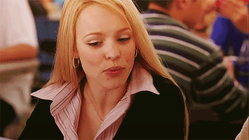
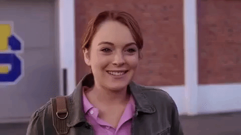

Regina es astuta, segura de sí misma, inteligente y manipuladora. Ella es capaz de hacer todo lo que esté a su alcance para conseguir lo que quiere y fue la abeja reina de North Shore High. A lo largo de la película, Regina se vuelve cada vez más insegura a medida que Cady Heron se vuelve más popular que ella. Su control inicial se identificó como que poseía dos rasgos: atractivo sexual y aprovecharse de las inseguridades de otras personas. Los seguidores de Regina surgieron de su dominio de hacer que las chicas se sintieran inferiores a su lado por su atractivo y de utilizar la atención masculina para parecer y sentirse superior.
Regina es capaz de controlar con maestría a las personas en la escuela y en casa. Manipula a las personas que la rodean para que le den exactamente lo que quiere, incluso persuadir a sus padres para que cambien de habitación o rompan parejas. Este control no dura toda la historia ya que proviene de su estatus social, y una vez que comienza a caer, también lo hace su influencia. A Regina le encantan las compras, las fiestas y los chismes. Regina está decidida despiadadamente a asegurarse de permanecer en lo más alto de la escala social y utilizará todo lo que tenga a su disposición para permanecer allí. Tiene una confianza inquebrantable y parece completamente ignorante de la posibilidad de que sea capaz de hacer algo malo.
Rachel Anne McAdams(nacida el 17 de noviembre de 1978)es una actriz canadiense. que después de graduarse de un programa de teatro en la Universidad de York en 2000.Trabajó en producciones cinematográficas y televisivas canadienses.
Cady es la única hija de Chip y Betsy Heron. Su familia se mudó a África cuando Cady era joven, ya que sus padres consiguieron trabajo allí como zoólogos investigadores. Cady creció educada en casa por su madre, pero era algo popular y tenía muchos amigos en África. No se sabe mucho sobre su estancia allí, pero le gustaba vivir allí, le encantaba pasar tiempo con los animales y estaba enamorada de un chico llamado Nfume, a quien no le agradaba su espalda. Cady a menudo hace referencia a cómo los animales en África manejarían los problemas de la escuela secundaria.
